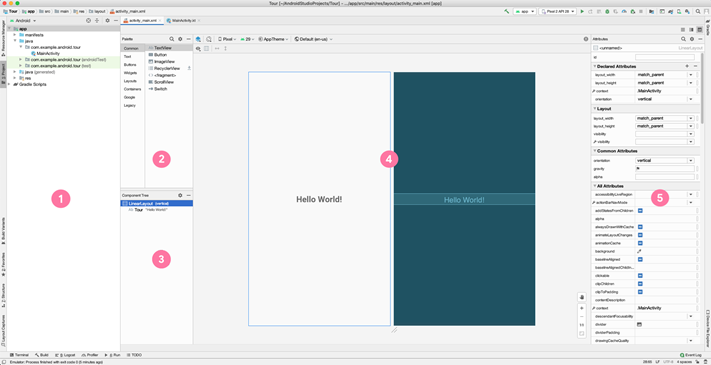
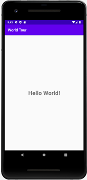
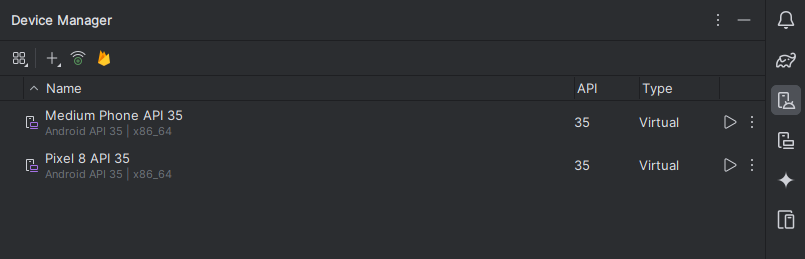

Создание первого приложения (начало)
Установка Android Studio
После установки Androi Studio создадим свое первое приложение “Hello World”. В нем мы ознакомимся со структурой Android-проекта, основными элементами экрана UI (User Interface).
Первый проект
Создадим первое приложение в виде Empty Views Activity:

Рис. 1. Окно создания приложения.
Далее, выберем шаблон для первого приложнеия. Как говорилось выше, выберем Empty Views Activity.

Рис. 2. Выбор Empty Views Activity.
Нам предоставят возможность выбрать параметры проекта:
Name - название вашего приложения;
Language - язык программирвоания (
Java\Kotlin);Minimum SDK - минимальная версия SDK (версия библиотек, используемых в проекте);
Build language - язык системы сборки проекта.

Рис. 3. Параметры проекта.
В результате мы получим проект со всеми необходимыми элементами для сборки, компиляции и запуска первого приложения.
Рабочее пространство разработчика

Рис. 4. Рабочее пространство Android Studio.
На рисунке 4 показан пример окна Вашего первого приложения и Layout Editor. Layout Editor состоит из Palette, Component Tree, Design Editor и Attributes.
Project window- отображает структуру проекта;Palette\Политра- дает доступ к использованию компонентов и слоев (layouts) в текущееActivity, например:TextViews,ImageViews, иButtons.Component Tree- показывает иерархиювиджетов\ viewsдля вашего Activity.Design Editor- визуальное представление вашего Activity.Attributes\Окно Атрибутов- состоит из списка атрибутов выбранного компонента. Можно менять параметра атрибутов.
Запуск приложения

Рис 6. Первый запуск приложения
Можно создать и запустить при помощи Эмуляторв (
Tools->Device Manager->Add a new device);А можно запустить на Вашем смартфоне. Необходимо включить
режим разработчикаи возможностьотладки(внутри режима разработчика).

Рис. 7. Пример окна создания эмулятора.